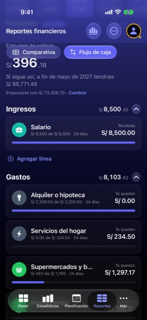

El plan vive escondido y armarlo pide revisar 18 líneas en cinco pantallas de scroll
Hoy
Capturas del simulador (app de origin/2.3, semillas de prueba). Pasos hoy: Más → Flujo de caja (2 toques) + 5 desplazamientos + «Crear mi plan»



De dónde sale
- Captura Capturas del 7-nov, semilla «realista», iPhone 17 Pro.
- Código
TabBarConfiguration: barra por defecto[.panel, .statistics, .planning]; Reportes vive en «Más» (MoreView, sección «Reportes»). - Código
FinancialReportView: los chips van en unsafeAreaInsetsobre el scroll. - Código Ticket
flujo-proyectado-en-tendencias-y-panel, «Siguiente paso, aparte»: la nota de Jürgen del 6-nov sobre lo difícil que es configurarlo. - Hipótesis Cuánta gente llega a armar el plan no se sabe: no hay medición de uso.
Las opciones
De 3 a 5 alternativas con el mismo caso. Desliza cada recorrido; el anillo cian marca dónde toca Ana.
Primero el resultado y «Crear mi plan»; las 18 líneas, plegadas
La pantalla de armar abre con lo que el plan te deja al mes y el botón «Crear mi plan» a la vista. Las líneas sugeridas van plegadas en tres grupos con su total («Lo que entra · 1 de 2», «Gastos fijos · 13», «Gastos que cambian · 20»). Quien quiere revisar despliega; quien no, crea en un toque.
Reportes financieros
A favor
- Crear el plan pasa de cinco pantallas de scroll a un toque.
- El resumen (lo que te sobra) se ve antes de decidir, no al final.
- Los grupos ya existen en el código («Gastos que cambian»): se extiende a los fijos.
En contra
- Quien quería revisar línea a línea da un toque más por grupo.
- Crear sin mirar puede dejar líneas que no esperaba (se corrigen después en el mes).
Armar en tres pasos cortos: con cuánto empiezas, lo que entra, lo que sale
Un asistente de tres pantallas con «Paso 1 de 3». Cada paso tiene pocas filas y su botón «Siguiente». El último enseña el resumen y «Crear mi plan».
A favor
- Cada pantalla tiene una sola pregunta: menos carga para quien no sabe qué es un flujo de caja.
- El progreso «Paso N de 3» dice cuánto falta.
- Separa el saldo inicial, que hoy pasa desapercibido arriba.
En contra
- Tres pantallas y tres toques para lo que hoy es una (larga).
- Más código: un flujo nuevo con su vuelta atrás.
«Flujo de caja» pasa a Planificación, junto a Presupuestos y Pagos
El plan se encuentra donde vive lo demás que se planifica: un tercer chip «Flujo de caja» en Planificación (hoy: Presupuestos · Pagos planificados). Reportes se queda con la Comparativa. El enlace de «Ver proyectado» lleva al mismo sitio.
Planificación
A favor
- Pasa de «Más › Reportes › chip» (oculto por defecto) a una pestaña que la barra ya tiene.
- Agrupa las tres herramientas de mirar hacia adelante.
- Reportes queda con una sola cosa y se puede renombrar a «Comparativa».
En contra
- Mueve una pantalla de sitio: quien ya la usaba en Reportes la busca.
- Planificación tiene lista y detalle en iPad (
ListDetailSplit): el flujo de caja tendría que encajar en ese molde.
Los chips de Reportes dejan de flotar sobre el contenido
Al desplazar, los chips «Comparativa · Flujo de caja» se quedan arriba con fondo propio (o suben con la página) y el contenido ya no pasa por debajo. Hoy se leen trozos («nar todo», el rótulo «Este mes te sobran») detrás de los chips. Cambio de pulido, independiente de las demás.
A favor
- Quita un defecto visible en todas las pantallas de la zona.
- Esfuerzo bajo.
- No cambia ningún flujo.
En contra
- No ayuda a encontrar el plan ni a armarlo: es pulido.
- Un fondo sólido rompe el cristal de iOS 26 en ese borde.
Lado a lado
La última pantalla de cada recorrido, frente a hoy.
Planificación
Comparación
| Opción | Pasos para el caso (maqueta) | Esfuerzo | Riesgo | Reabre |
|---|---|---|---|---|
| Hoy | Más → Flujo de caja (2 toques) + 5 desplazamientos + «Crear mi plan» | — | — | — |
| A · Primero el resultado y «Crear mi plan»; las 18 líneas, plegadas | 1 toque para crear; +1 por grupo para revisar | medio | bajo | — |
| B · Armar en tres pasos cortos: con cuánto empiezas, lo que entra, lo que sale | 3 toques | medio-alto | medio | — |
| C · «Flujo de caja» pasa a Planificación, junto a Presupuestos y Pagos | 1 toque a la pestaña + 1 al chip | medio | medio | Dónde vive Reportes |
| D · Los chips de Reportes dejan de flotar sobre el contenido | — | bajo | bajo | — |
Lente de perfiles
Perfiles simulados, no entrevistas Los siete perfiles de la revisión del usuario nuevo, usados como lentes. riesgo alto de trabarse · medio · bajo.
| Perfil | Hoy | A | B | C | D |
|---|---|---|---|---|---|
| P1 · Migrante de Excel | revisa todo, pero largo | quiere ver todas las líneas | más pasos | — | — |
| P2 · Principiante abrumado | no sabe qué revisar | una cifra y un botón | una pregunta por pantalla | lo encuentra sin «Más» | — |
| P3 · Anotador rápido que no lee | no llega al botón | un toque | tres toques | — | — |
| P4 · Experto de otra app | lo busca en Planificación | despliega lo que le importa | asistente que no puede saltarse | donde lo espera | — |
| P5 · Llega por una invitación de grupo | — | — | — | — | — |
| P6 · Varias monedas y tarjeta | — | — | — | — | — |
| P7 · Texto grande, a veces en iPad | más scroll aún | menos scroll | pantallas cortas | — | texto grande: menos solape |
Recomendación: A + D
A ataca lo que más cuesta (llegar al botón) sin quitar la posibilidad de revisar; D quita un defecto visible en toda la zona con poco esfuerzo. C es la mejor respuesta a «dónde está», pero mueve una pantalla de sitio y choca con el molde de lista y detalle del iPad: conviene decidirla aparte. B alarga el camino para P3 y P4.
Qué decide Jürgen
- ¿«Crear mi plan» y el resumen arriba, con las líneas plegadas por grupos (A)?
- ¿Flujo de caja se muda a Planificación (C)? Reabre dónde vive Reportes.
- ¿Los chips de Reportes con fondo propio para que nada pase por debajo (D)?
Revisión por vistas 2.3 · Reportes y Flujo de caja. Maquetas en HTML con datos ficticios: no son la app. Pasos contados sobre las maquetas; los de «Hoy», en el simulador o en el código citado.